library(data.table)
set.seed(1614)Testing Goodness of Fit
Kolmogorov-Smirnov Test
dyn.load(here::here("applied_stats/src/ks.so"))
pKolmogorov2x <- function(x, n) {
# Compute probability of x in Kolmogrov distribution
# From R's source code, see first link for C source and second for R source:
# https://github.com/SurajGupta/r-source/blob/a28e609e72ed7c47f6ddfbb86c85279a0750f0b7/src/library/stats/src/ks.c
# https://github.com/SurajGupta/r-source/blob/master/src/library/stats/R/ks.test.R
p <- .Call("pKolmogorov2x", x, n)
return(min(1.0, max(0.0, p)))
}
# Random variable
n <- 100
X <- runif(n)
# Test
# H_0: X is normal (CDF of a normal)
# H_1: X is not normal
# 5% level
alpha <- 0.05
F0 <- pnorm # null cdf - normal
# visual comparison
plot(ecdf(X)) # emprical cdf of X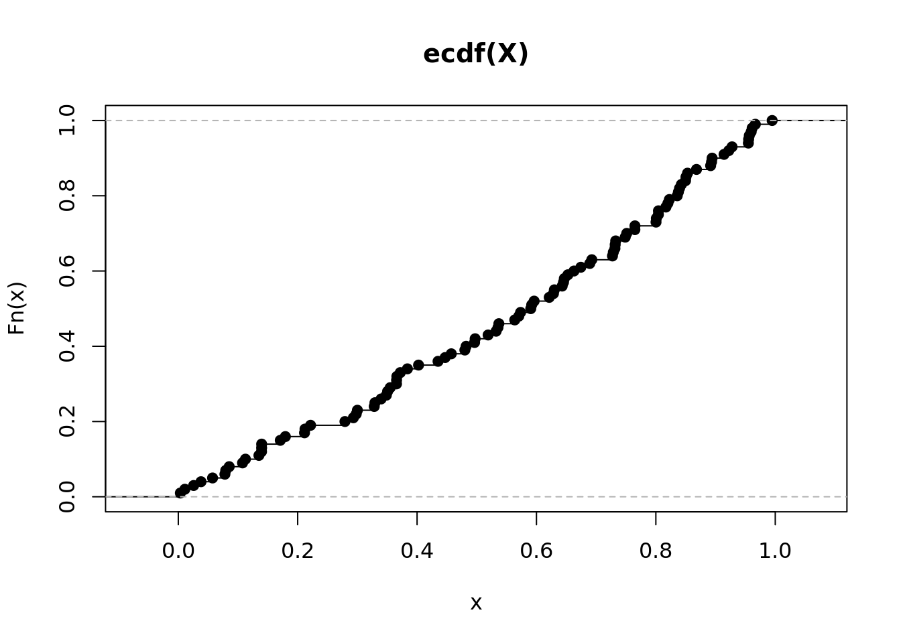
plot(F0(seq(-3, 3, by = 0.1)))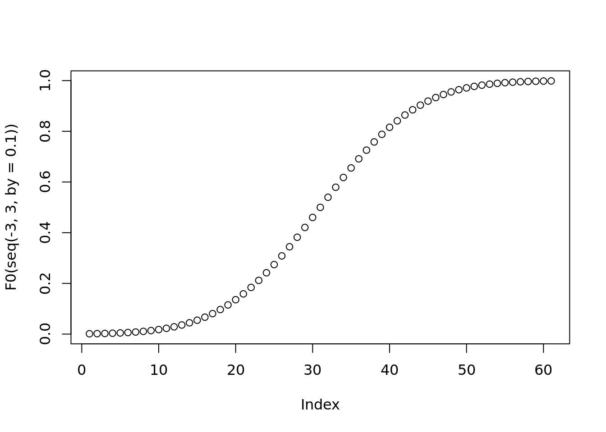
# Compute test statistic
dist1 <- F0(sort(X)) - ((1:n - 1) / n) # hypothetical CDF - empirical CDF
dist2 <- (1:n / n) - F0(sort(X)) # empirical CDF - hypothetical CDF
(T_n <- max(c(dist1, dist2)))[1] 0.5013726# p-value
(pval <- 1 - pKolmogorov2x(T_n, n))[1] 4.440892e-16# test result
(reject <- pval < alpha)[1] TRUE# compare with R
ks.test(X, y = F0, exact = TRUE) ## compute 'exact' p-value
Exact one-sample Kolmogorov-Smirnov test
data: X
D = 0.50137, p-value = 4.441e-16
alternative hypothesis: two-sidedEmpirical CDF Calculation
Recall the CDF gives us \(P(X \le t)\). To compute the empirical CDF, we just need to calculate ((number of elements in sample <= t) / n) for all \(t = X_i\)
# This is how R calculates the empirical CDF function
# https://github.com/SurajGupta/r-source/blob/master/src/library/stats/R/ecdf.R
ecdf <- function (x)
{
x <- sort(x) # drops NAs
n <- length(x)
if(n < 1) stop("'x' must have 1 or more non-missing values")
vals <- unique(x)
rval <- approxfun(vals, cumsum(tabulate(match(x, vals)))/n,
method = "constant", yleft = 0, yright = 1, f = 0,
ties = "ordered")
rval
}
# example
x <- runif(10)
x <- c(x, sort(x)[6:10]) # w some duplicates
x <- sort(x) # drops NAs
n <- length(x)
vals <- unique(x)
# get indices of sorted data
(match(x, vals)) [1] 1 2 3 4 5 6 6 7 7 8 8 9 9 10 10# count number of occurrences of each index
(tabulate(match(x, vals))) [1] 1 1 1 1 1 2 2 2 2 2# take the cumulative sum so that index t is the count of samples with index <= t
(cumsum(tabulate(match(x, vals)))) [1] 1 2 3 4 5 7 9 11 13 15# divide by n - get probability estimate at each quantile t
((cumsum(tabulate(match(x, vals)))) / n) [1] 0.06666667 0.13333333 0.20000000 0.26666667 0.33333333 0.46666667
[7] 0.60000000 0.73333333 0.86666667 1.00000000QQ Plot
n <- 100
X <- rnorm(n)
# is the data normal? fail to reject
ks.test(X, y = pnorm)
Asymptotic one-sample Kolmogorov-Smirnov test
data: X
D = 0.081413, p-value = 0.5213
alternative hypothesis: two-sided# visually? qq plot
qq_plot <- function(X, F) {
# see:
# https://github.com/SurajGupta/r-source/blob/master/src/library/stats/R/qqplot.R
emp <- sort(X)
the <- F(ppoints(length(X)))
plot(the, emp,
xlab = "Theoretical Quantiles", ylab = "Empirical Quantiles")
}
qq_plot(X, qnorm)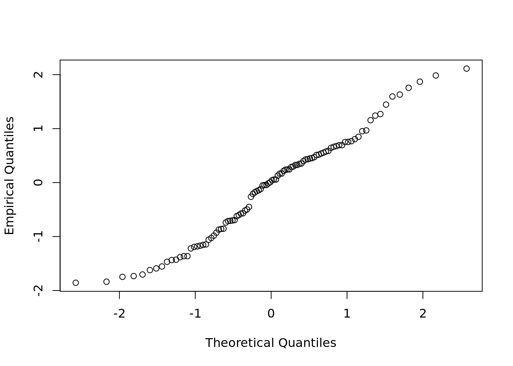
qqplot(qnorm(ppoints(n)), X)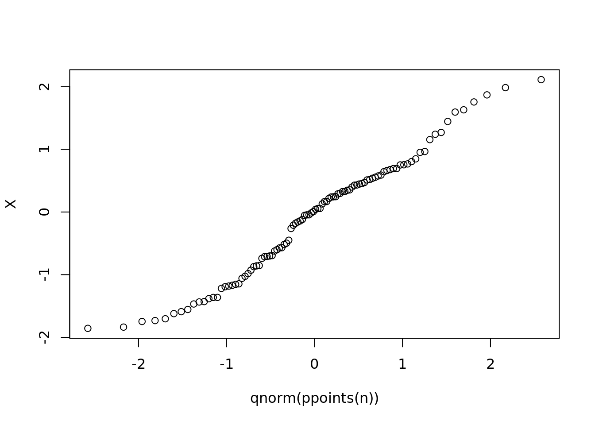
# heavier left and right tails
# - which is consistent with how Student's T compares to Gaussian (incorporates
# how sample size - degrees of freedom - contributes extra uncertainty)
qqnorm(qt(ppoints(n), df = 5)); abline(a = 0, b = 1)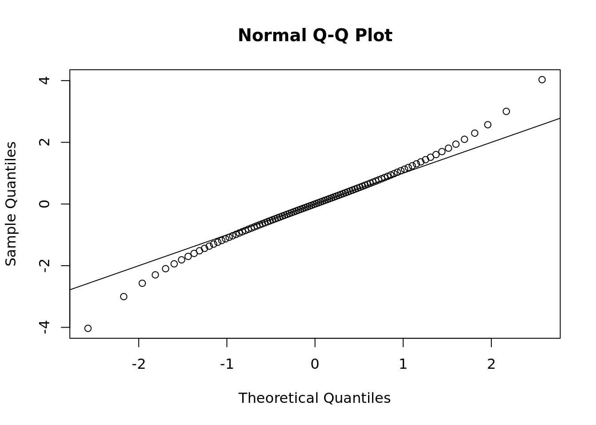
# heavy tails
qqnorm(qcauchy(ppoints(n))); abline(a = 0, b = 1)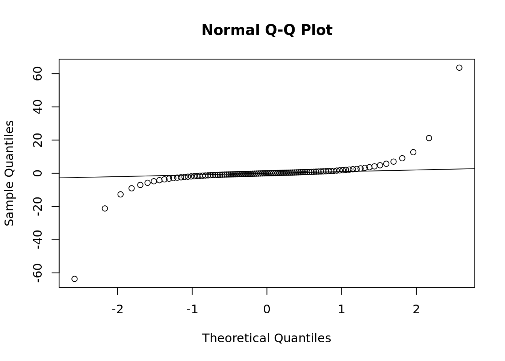
# light tails
qqnorm(qunif(ppoints(n))); abline(a = 0, b = 1)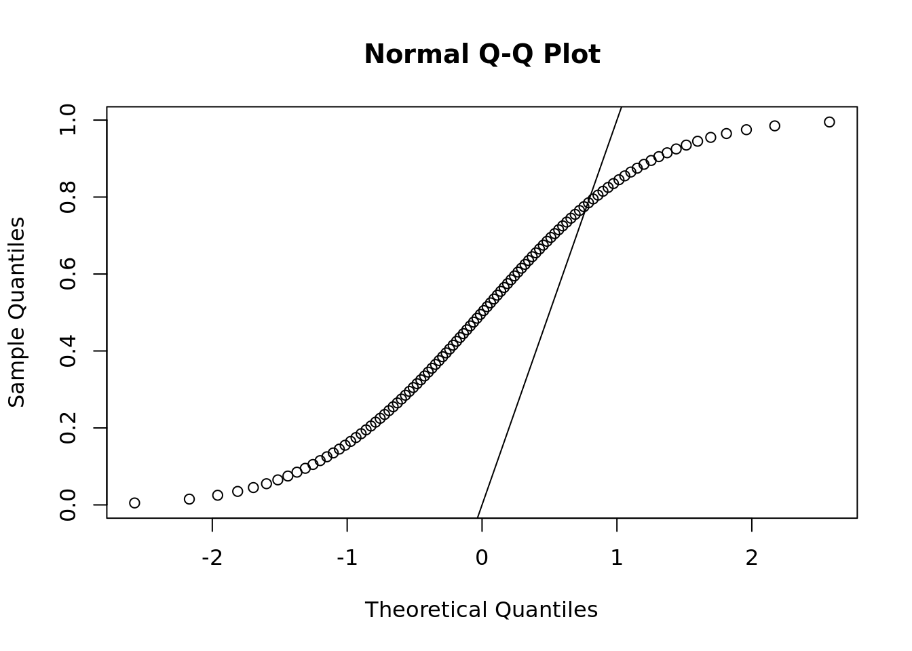
# left tail lighter (exp has no left tail, > 0), right tail heavier
qqnorm(qexp(ppoints(n))); abline(a = 0, b = 1)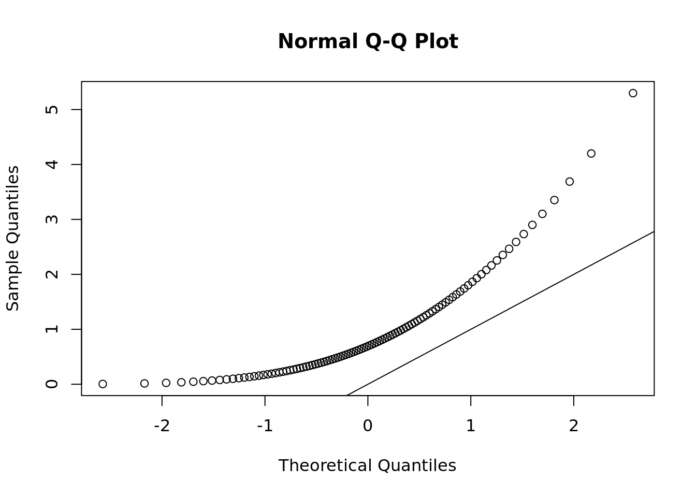
# QQ Plots don't have to plot against a Gaussian
# chi-sq example from documentation
y <- rchisq(500, df = 3)
qqplot(qchisq(ppoints(500), df = 3), y,
main = expression("Q-Q plot for" ~~ {chi^2}[nu == 3])
); abline(a = 0, b = 1)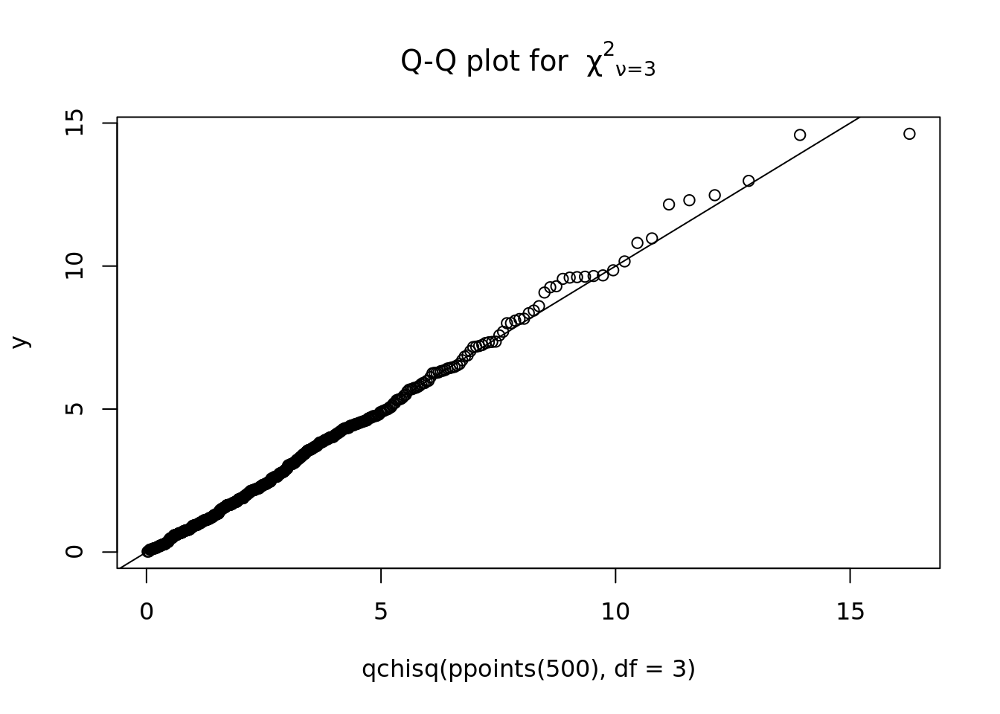
# heavier right tail, lighter left tail
qqplot(qnorm(ppoints(500)), y,
main = expression("Q-Q plot for" ~~ {chi^2}[nu == 3])
); abline(a = 0, b = 1)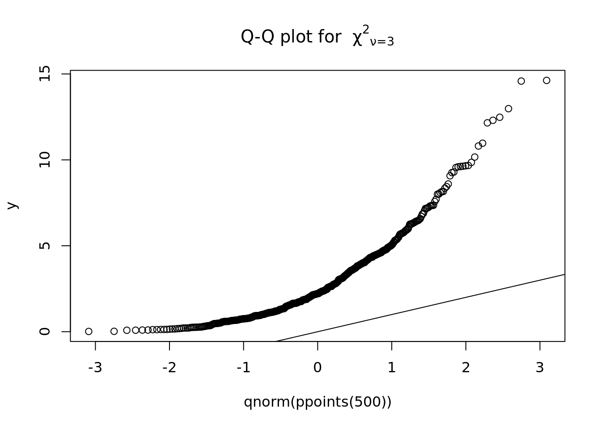
Chi-Squared Goodness of Fit Test
Gaussian Example
n <- 100
mu0 <- 5
sigma0 <- 2
# X <- rnorm(n, mu0, sigma0)
X <- runif(n, min = -2, max = 2)
plot(-5:15, dnorm(-5:15, mu0, sigma0), type = "l")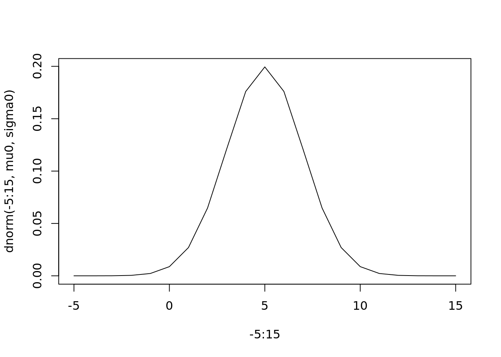
# H_0: X is normally distributed
# H_1: no it aint
# step 1 - bin X
# (use some rule of thumb for # of bins, see Histogram wikipedia for examples)
hx <- hist(X, breaks = ceiling(n^(1/3)))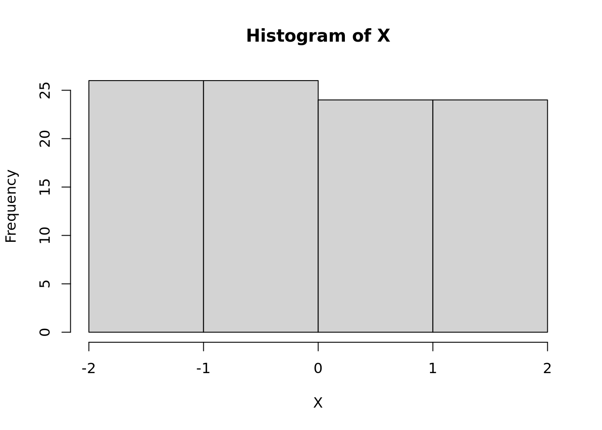
(Xbins <- hx$breaks)[1] -2 -1 0 1 2# step 2 - compute sample probabilities (proportions) of each bin
(t <- table(cut(X, breaks = hx$breaks)))
(-2,-1] (-1,0] (0,1] (1,2]
26 26 24 24 (hat_p <- unname(t / n))[1] 0.26 0.26 0.24 0.24(K <- length(hat_p)) # number of bins[1] 4# step 3 - use MLE to estimate parameters
d <- 2 # dimension of parameter vector
# For Gaussian, MLE mu = sample mean,
# MLE sigma^2 = mean of squared deviance around sample mean
(mu_hat <- mean(X))[1] -0.04167832(sigma_hat <- sqrt(mean( (X - mu_hat)^2 )))[1] 1.144974# step 4 - using MLE parameter, estimate probabilities at quantiles that
# define the break points
pnorm(Xbins, mu_hat, sigma_hat)[1] 0.04359929 0.20130149 0.51451874 0.81853170 0.96272038# but the probability of each bin is the area between each quantile:
(hat_ptheta <- data.table::frollapply(
pnorm(Xbins, mu_hat, sigma_hat),
n = 2,
\(x) x[2] - x[1])[-1] # drop NA at first idx
)[1] 0.1577022 0.3132172 0.3040130 0.1441887# step 5 - compute chi-sq test statistic:
(T_n <- n * sum( (hat_p - hat_ptheta)^2 / hat_ptheta))[1] 15.25439# compare with q_alpha for alpha = 5% of the chi squared distribution with
# d.o.f = K - d - 1
alpha = 0.05
(q_alpha <- qchisq(p = 1 - alpha, df = K - d - 1))[1] 3.841459(reject <- T_n > q_alpha)[1] TRUE# p value
(pval <- 1 - pchisq(T_n, df = K - d - 1))[1] 9.395789e-05(reject <- pval < alpha)[1] TRUE# https://bookdown.org/yg484/rec_4_note/chi-square-goodness-of-fit-test.html#goodness-of-fit-test-for-other-distributionsPoisson Example
n <- 100
lambda0 <- 5
X <- rpois(n, lambda = lambda0)
plot(1:20, dpois(1:20, lambda = 5), type = "l")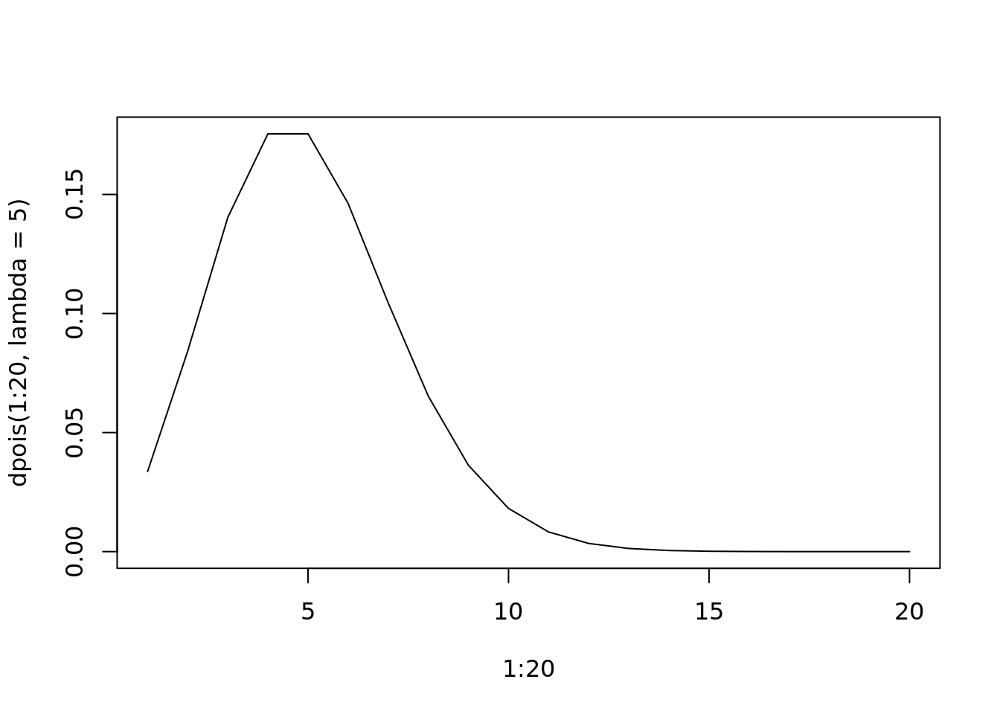
# H_0: X is Poisson distributed
# H_1: no it aint
# step 1 - bin X
# (use some rule of thumb for n bins, see Histogram wikipedia for examples)
hx <- hist(X, breaks = ceiling(n ^ (1/3)))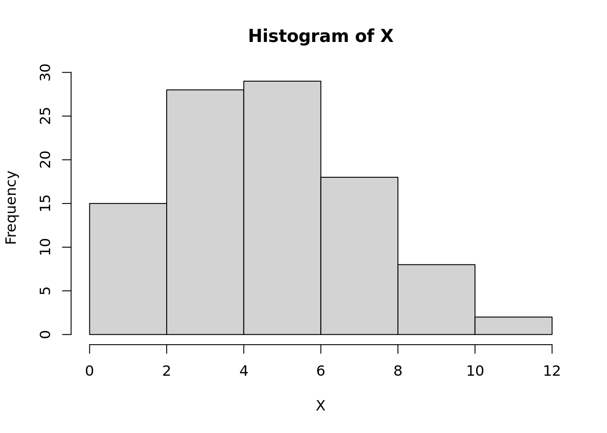
(Xbins <- hx$breaks)[1] 0 2 4 6 8 10 12# step 2 - compute sample probabilities (proportions) of each bin
(t <- table(cut(X, breaks = hx$breaks)))
(0,2] (2,4] (4,6] (6,8] (8,10] (10,12]
14 28 29 18 8 2 (hat_p <- unname(t / n))[1] 0.14 0.28 0.29 0.18 0.08 0.02(K <- length(hat_p)) # number of bins[1] 6# step 3 - use MLE to estimate parameters
# MLE for Poiss(lambda) = sample average
(lambda_hat <- mean(X)) # note: E[X] = lambda[1] 5.16# step 4 - using MLE parameter, estimate probabilities at quantiles that
# define the break points
ppois(Xbins, lambda = lambda_hat)[1] 0.0057417 0.1118070 0.4128814 0.7384336 0.9209592 0.9831640 0.9973666# but the probability of each bin is the area between each quantile:
(hat_ptheta <- data.table::frollapply(
ppois(Xbins, lambda_hat),
n = 2,
\(x) x[2] - x[1])[-1] # drop NA at first idx
)[1] 0.10606527 0.30107439 0.32555223 0.18252559 0.06220481 0.01420259# step 5 - compute chi-sq test statistic:
(T_n <- n * sum( (hat_p - hat_ptheta)^2 / hat_ptheta))[1] 2.370697# compare with q_alpha for alpha = 5% of the chi squared distribution with
# K - 2 d.o.f.
# (d.o.f = K - d - 1, where d = number of parameters = c(lambda) = 1)
d <- 1
alpha = 0.05
q_alpha <- qchisq(p = 1 - alpha, df = K - d - 1)
(reject <- T_n > q_alpha)[1] FALSE# p value
(pval <- 1 - pchisq(T_n, df = K - d - 1))[1] 0.6679292(reject <- pval < alpha)[1] FALSE